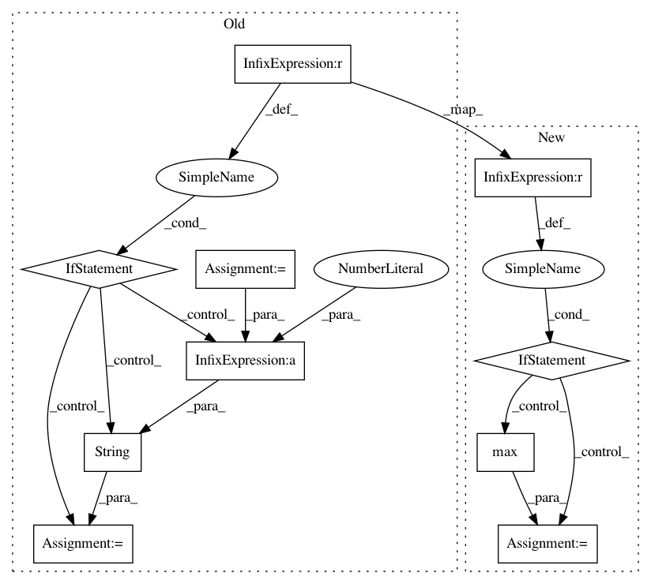

95d6cf194274246ee029416186f60806617d8fe6,engine/training.py,,run,#Any#Any#Any#Any#,24
Before Change
previous_sub_dir = max([int(name) for name in log_sub_dirs])
except:
quit("Any immediate sub directories of the log directory must be integer-numbered")
if param.starting_iter > 0:
current_log_sub_dir = str(previous_sub_dir)
else:
current_log_sub_dir = str(1+previous_sub_dir)
else:
current_log_sub_dir = "0"
writer = tf.summary.FileWriter(os.path.join(root_dir, "logs", current_log_sub_dir),
sess.graph)
After Change
log_sub_dirs = [name for name in os.listdir(os.path.join(root_dir, "logs")) if name.isdecimal()]
if log_sub_dirs and param.starting_iter == 0:
log_sub_dir = str(max([int(name) for name in log_sub_dirs]) + 1)
elif log_sub_dirs and param.starting_iter > 0:
log_sub_dir = str(
max([int(name) for name in log_sub_dirs if os.path.isdir(os.path.join(root_dir, "logs", name))]))
else:
log_sub_dir = "0"
writer = tf.summary.FileWriter(os.path.join(root_dir, "logs", log_sub_dir),
sess.graph)
In pattern: SUPERPATTERN
Frequency: 3
Non-data size: 10
Instances
Project Name: NifTK/NiftyNet
Commit Name: 95d6cf194274246ee029416186f60806617d8fe6
Time: 2017-07-10
Author: r.gray@ucl.ac.uk
File Name: engine/training.py
Class Name:
Method Name: run
Project Name: facebookresearch/ParlAI
Commit Name: d7ddc9ca7b7b62657b1e51c66b3f85da679d7b01
Time: 2020-06-12
Author: roller@fb.com
File Name: parlai/utils/misc.py
Class Name: TimeLogger
Method Name: log
Project Name: NifTK/NiftyNet
Commit Name: aef60c84d7ad8b5fb852f2dec16b2a8de838a321
Time: 2017-07-10
Author: eli.gibson@gmail.com
File Name: engine/training.py
Class Name:
Method Name: run